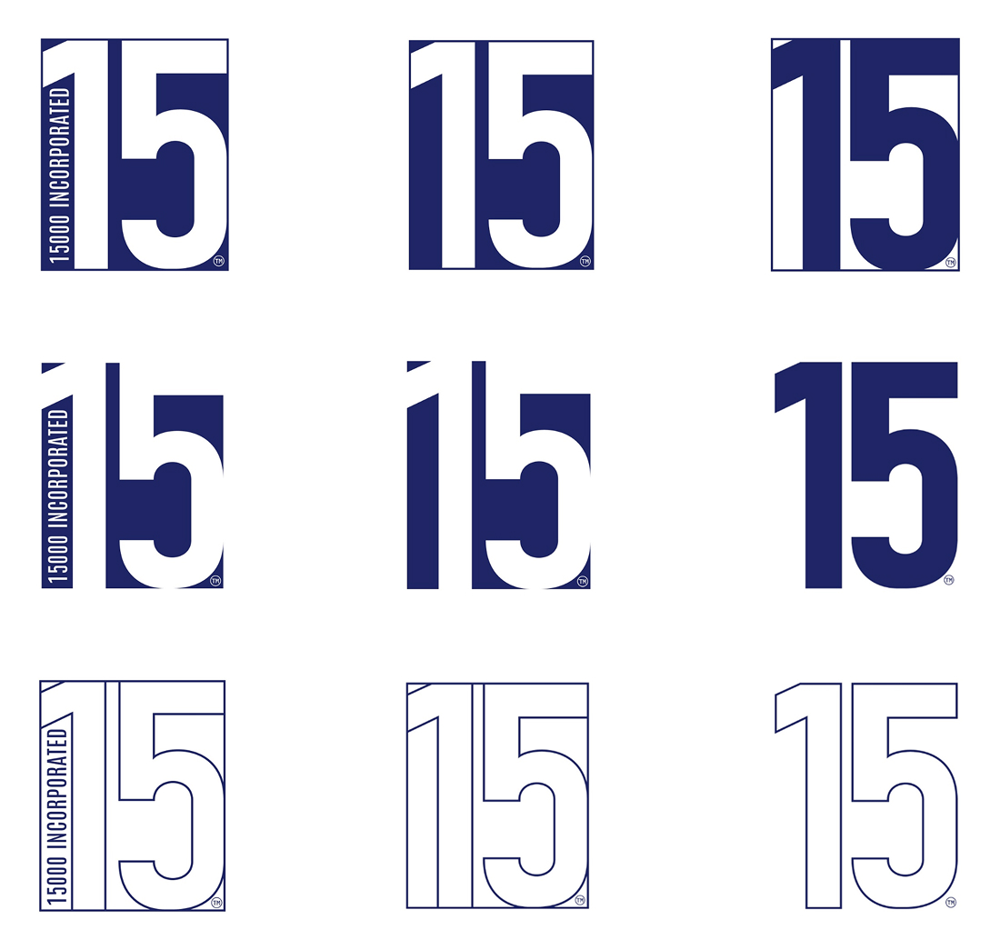

Logo Design
Logo designs developed through close client collaboration and iterative ideation.
- Overview:
-
15000 Inc is a MEP engineering company based in Rohnert Park, CA. I was initially contacted for creative support for the modernization of their logo. After initial sit-down I was asked to completely redesign the companies branding identity, keeping the new logo simple and inline with the old logo.
- Original Logo:
Drafting
In our initial discussions, the client requested a simple wordmark similar to their original logo. As we talked through their branding needs, it became clear that versatility would be important, so I encouraged them to remain open to other approaches, including pictorial and combination marks. As agreed, the drafting phase included four distinct logo concepts, each exploring a different logo format for comparison.
Basic Wordmarks


Pictorial mark


Illustrative Wordmark


Numerical mark


Final
My client had specific requirements for logo formats. I delivered nine iterations, including black-and-white versions, as well as options with transparent and solid backgrounds.
